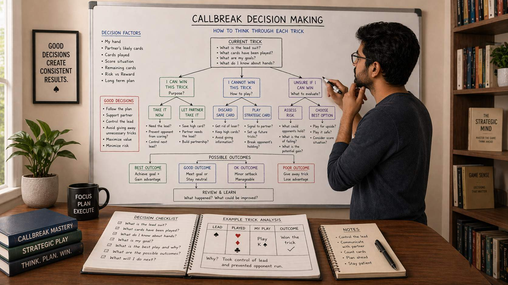

🪶 Introduction
Every card you play in Callbreak involves a decision. Some decisions are straightforward — play your only card that follows suit. Others are complex, requiring you to weigh multiple factors: your hand, your partner's likely holdings, what has already been played, and what you want to achieve in the round.
Decision making in Callbreak is not about finding the perfect play every time. It is about developing a consistent thought process that leads to good results over many rounds.
🖼️ Callbreak Decision Making Overview

🎯 Why Decision Making Matters in Callbreak
Callbreak is a game of limited information. You see only your 13 cards. The other players' holdings are hidden, which means every decision involves some uncertainty. Skilled decision makers do not guess blindly — they reason through what they know, estimate probabilities, and choose the play that best balances risk and reward.
Good decision making separates players who improve over time from those who stay at the same level despite years of play.
📋 The Decision-Making Framework
Before making any play, run through a simple mental checklist. This applies to every card you play, from the first lead to the last card of a trick.
The Four Questions
Ask yourself these four questions before playing any card:
- What suit is being led? — You must follow suit if you can
- What am I trying to achieve? — Win the trick, lose the trick, conserve cards, send a signal to partner
- What are my options? — List all legal plays available to you
- What is the likely outcome of each option? — Estimate which play best serves your goals
This framework does not guarantee perfect decisions, but it ensures you are making intentional choices rather than playing on autopilot.
👀 Evaluating Your Hand Before the Round
Your pre-round hand evaluation shapes every decision that follows. Strong evaluation leads to accurate calls and better alignment with your partner.
Hand Strength Assessment
Consider two dimensions of your hand:
- High Card Strength: How many high cards (A, K, Q, J) do you hold in each suit? High cards are your primary trick-winning tools.
- Suit Length: How many cards do you hold in each suit? Longer suits give you more plays in that suit and more flexibility.
Trump Evaluation
Count your trump cards. Trump strength is critical because trumps can win tricks in any suit. Fewer than 2 trump is a weak position; 4 or more is strong.
📊 Making Your Call
Your call is one of the most consequential decisions in the round. It commits you to a specific performance level and shapes your partner's expectations.
How to Think About Your Call
Base your call on tricks you can reasonably expect to win, not tricks you hope to win. Count your "sure tricks" first — cards that will win regardless of distribution:
- High trump cards (A, K of trump suit)
- High cards in long suits where opponents must follow suit
- Quick winners in your longest suits
Then estimate "probable tricks" — situations where you might win depending on the cards others hold. Do not count these as certain.
🃏 Following Suit: When to Win and When to Fold
Following suit is the most frequent decision you will make. Most of the time, you are not trying to win — you are trying to get rid of low cards without giving away tricks.
When to Play High (Try to Win)
Play a high card when:
- You are likely to win the trick and want to bank it
- Your partner needs you to win to set up their strategy
- The trick is important enough to justify using your high card
- You have enough remaining high cards to cover future situations
When to Play Low (Let the Trick Go)
Play a low card when:
- You cannot win regardless of what you play
- Winning the trick does not meaningfully contribute to your call
- You want to conserve high cards for later, more critical tricks
- Your partner is positioned to win and you are supporting them
🎴 Using Trump Strategically
Deciding when to trump is one of the highest-impact decisions in Callbreak. Trump at the wrong time and you waste a valuable resource. Fail to trump when it matters and you lose tricks you should have won.
Questions to Ask Before Trumping
- Is the trick worth a trump card?
- Am I likely to have enough trump left for situations later in the round?
- Could my partner handle this trick if I let it go?
- What have opponents revealed about their trump holdings?
When to Trump Early
Trump usage is generally justified when:
- You are unable to follow suit and the trick is high-value
- Your partner is counting on you to win this specific trick
- You have a surplus of trump and can afford the expenditure
- Opponents show clear weakness in the trump suit
When to Save Trump
Hold your trump when:
- The round is still early and future tricks are uncertain
- You have a partner who might handle the situation
- You have limited trump and losing them would leave you vulnerable
- The trick value is low relative to what might come later
🎯 Leading Decisions
As the first player to act in a trick, you have the most freedom — but also the most responsibility. Your lead shapes what happens next.
Choosing What to Lead
- Lead suits where you are strong: If you have a long suit with high cards, leading there gives you control
- Lead to set up your partner: Sometimes the best lead is not for you to win, but to give your partner a chance
- Lead conservatively in early rounds: Save your strongest leads for moments when they matter most
- Avoid leading trump unless necessary: Trump leads surrender control of the suit to opponents
🛡️ Defending Against Opponent Strategies
Your opponents are not playing randomly. They have strategies too. Part of good decision making is recognizing what opponents are trying to accomplish and interrupting it.
Recognizing Opponent Patterns
- An opponent repeatedly leading a specific suit may be signaling strength there
- Sudden changes in opponent behavior may indicate they have found a winning line
- Opponents playing high cards early may be trying to clear a suit before it becomes dangerous
❓ FAQ
What is the best decision-making framework for Callbreak?
Use the four questions: What suit is led? What am I trying to achieve? What are my options? What is the likely outcome of each option?
When should I use trump cards?
Use trump when the trick is high-value, you cannot follow suit, and you have enough trump remaining for later situations.
How do I make accurate calls?
Count your "sure tricks" first (high trump, high cards in long suits), then estimate "probable tricks" separately. Base your call on sure tricks plus a portion of probable tricks.
Should I always try to win tricks?
No. The default in Callbreak is to play low when you cannot contribute meaningfully to winning the trick. Conserve high cards for critical moments.
🧾 Summary
Effective Callbreak decision making follows a clear process:
- Evaluate your hand honestly before the round to set accurate calls
- Use a consistent framework (four questions) for every play during the round
- Distinguish between situations where you should win tricks and situations where you should let them go
- Spend trump cards only when the expected value justifies the expenditure
- Lead strategically, considering both your goals and your partner's needs
- Read opponent patterns and adjust your play to disrupt their strategies
- Be willing to take calculated risks in late rounds when the situation demands it
Decision making improves with practice and reflection. After each round, identify where your decisions succeeded and where they failed, and let that analysis sharpen your thinking for next time.
🔥 SEO Keywords
callbreak decision making, how to make better calls in callbreak, callbreak trick decisions, callbreak strategy thinking, callbreak playing smart, callbreak game decisions